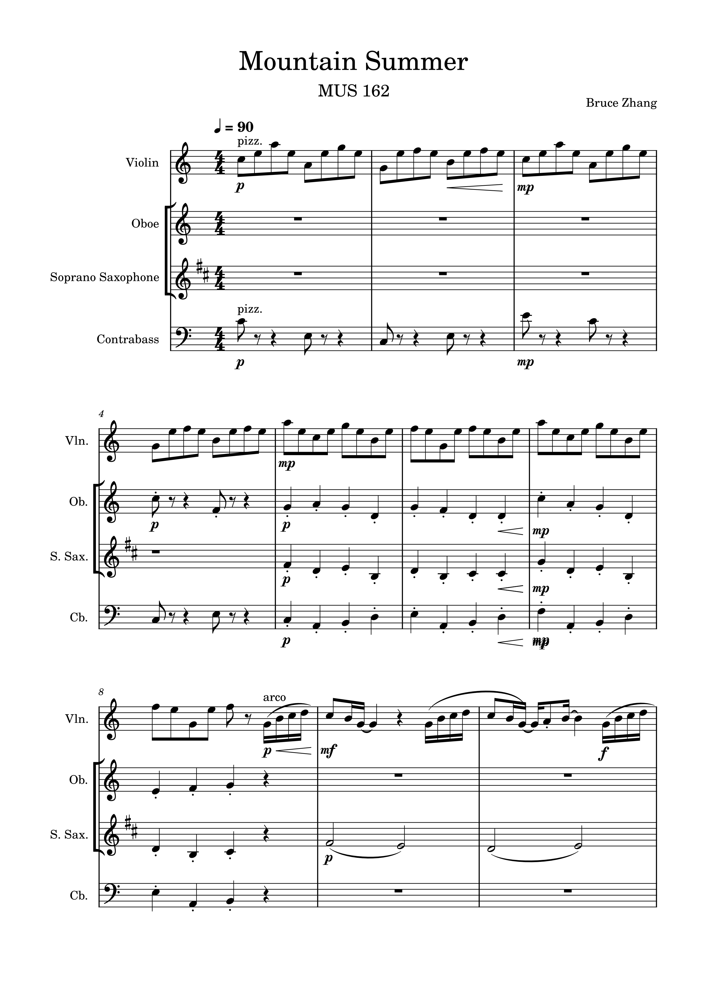
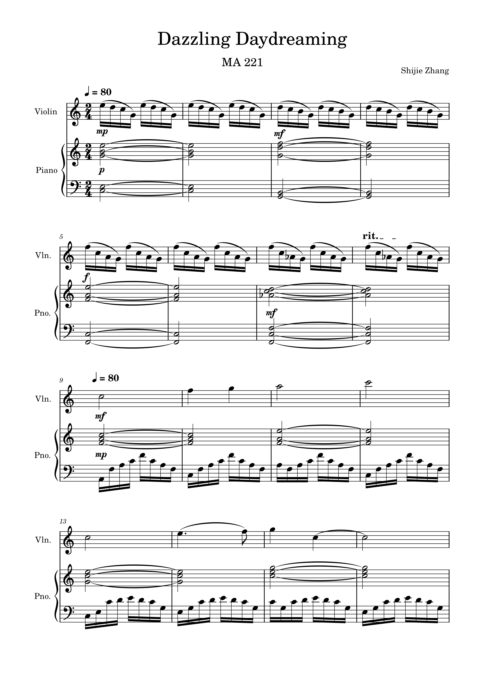
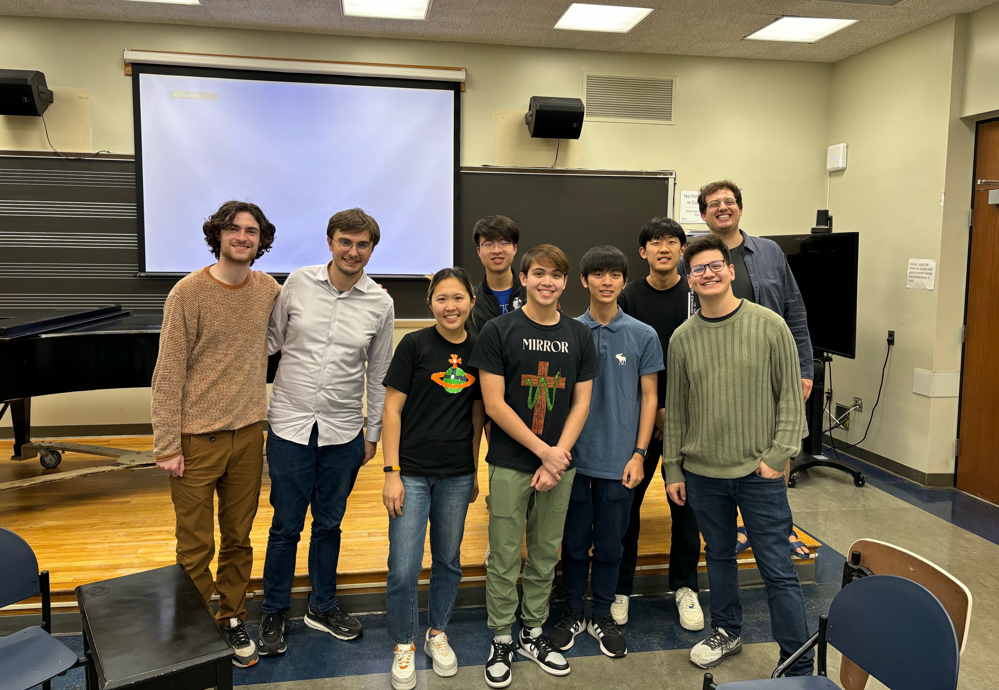
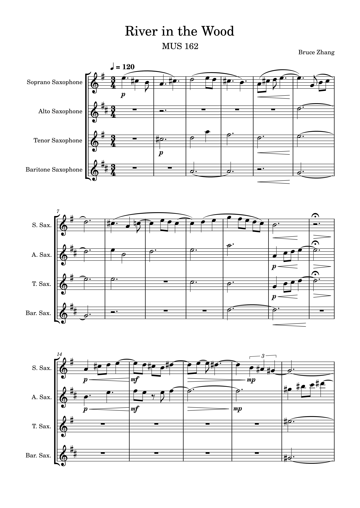
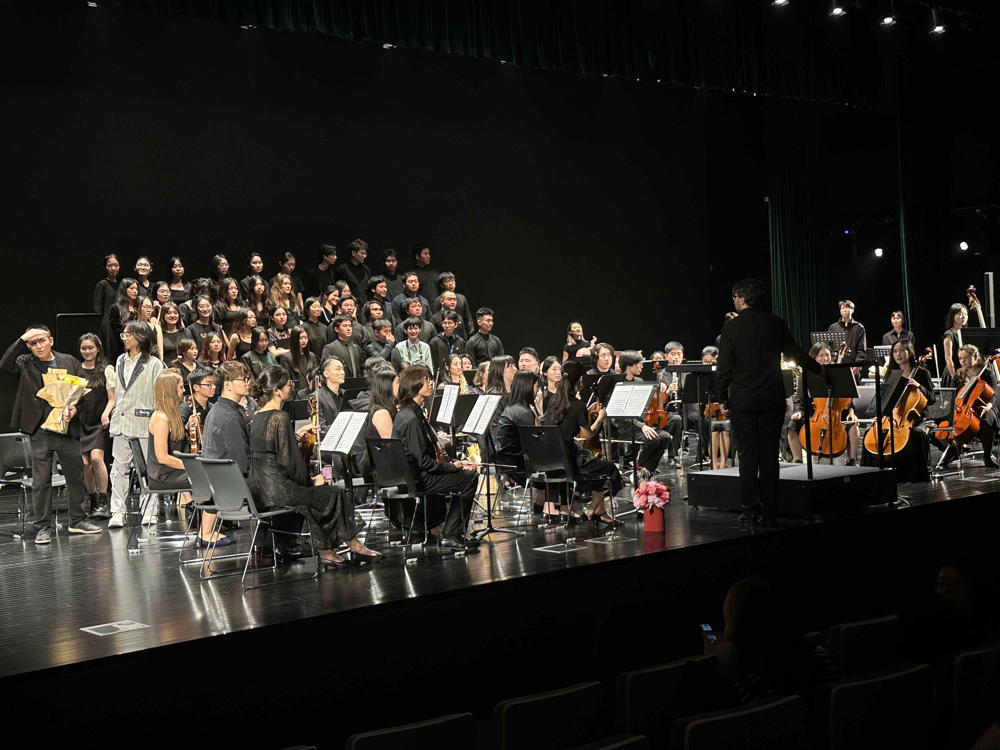
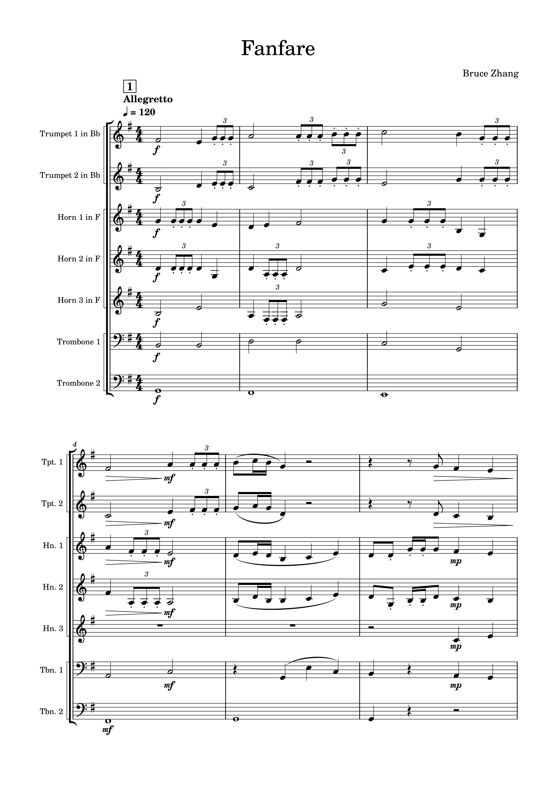
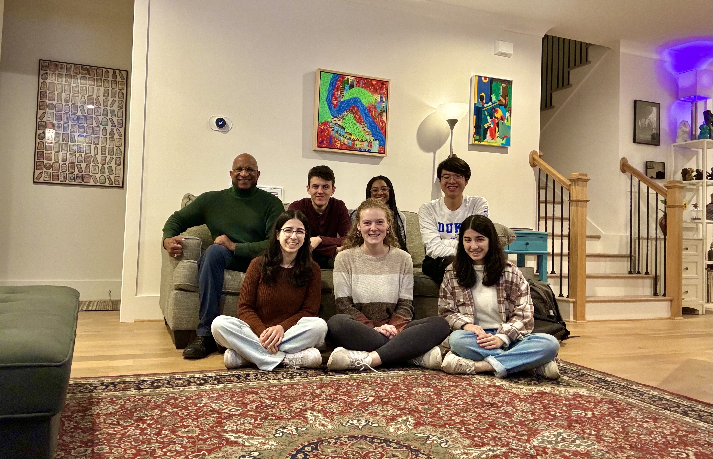
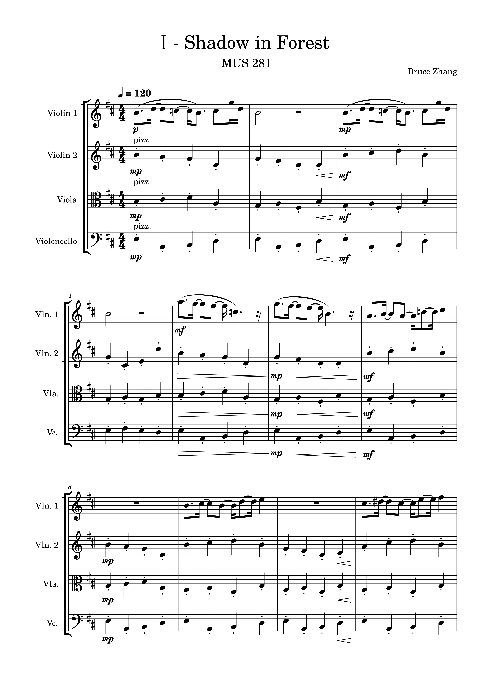
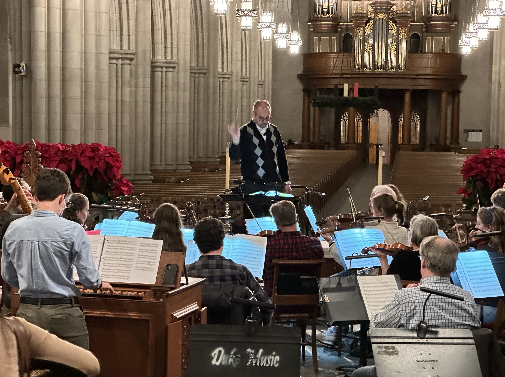
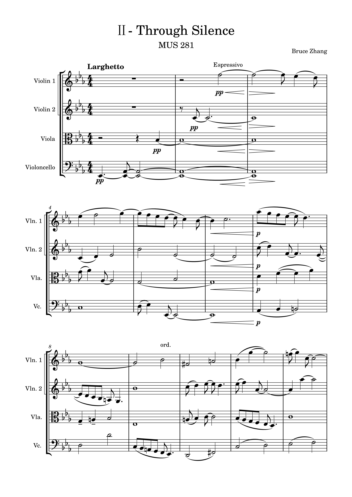

Music Collection
从萨克斯四重奏到弦乐四重奏，从小提琴独奏到铜管合奏——这些是我在杜克大学期间创作并首演的原创作品。作曲训练塑造了我对结构、节奏和"用有限素材讲完整故事"的直觉，后来直接迁移到了交互设计和产品体验的工作中。
Clarinet & Saxophone Duet
Mountain Summer
一首轻快的二重奏小品，灵感来自久石让的《Summer》。两件木管乐器围绕一个短小主题展开对话，试图捕捉夏日山间的明亮感。


Violin & Piano
Dazzling Daydreaming
开头以反复琶音建立白日梦般的氛围，小提琴在上方自由展开旋律线。在 "Through Time with Music" 室内乐系列音乐会首演。

Saxophone Quartet
River in the Wood
灵感来自原神音乐《女主人的叮咛》，通过模仿和对位逐渐展开一条简单的旋律线，用萨克斯特有的温暖音色描绘林间水流的流动感。


Brass Ensemble
Fanfare
七件铜管乐器的开场曲。以三连音为核心动力，各声部在齐奏和对位之间交替，在短篇幅内做出丰富的层次变化。


String Quartet
String Quartet in F
我写过篇幅最长的室内乐作品。四个声部的关系构成叙事线——从齐奏到分裂，从对话到独白，再到最终的和解。


String Quartet + Sync Animation
Through Silence
同名弦乐四重奏与同步动画。四个视觉元素分别对应四种弦乐器——各自运动，偶尔交汇，像声部之间的对话。音乐和动画同步创作，彼此塑造。

